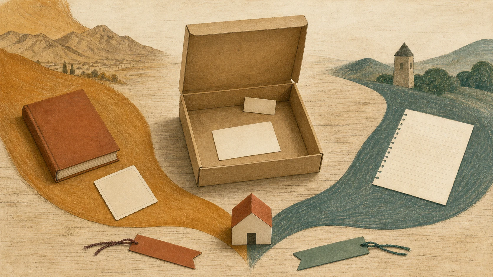

La caja para Martina y Guadalupe

La tapa se levantó con un leve quejido de cartón.
Dentro no había oro, joyas ni una llave capaz de abrir un castillo. Había dos tarjetas blancas y una cantidad absurda de espacio, suficiente para que una decepción empezara a parecer una invitación.
Esta es la caja de Martina y Guadalupe.
No está guardada en un armario; vive en estas páginas. Al principio está casi vacía porque el libro apenas acaba de abrirse. Cerca de ella esperan un volumen sin título, una lámina sin pegar, una hoja pautada y dos cintas de papel. Una es ocre; la otra, azul verdosa. Vienen de lados distintos y sólo se tocan al llegar a una casa pequeña.
La cinta ocre trae el camino de Alejo. La azul verdosa trae el de Lau.
Martina y Guadalupe están en la casa donde ambos caminos pueden compartir mesa, estante y caja. Mucho antes de esa casa, cada familia avanzó por su cuenta. Hubo otros pueblos, otros apellidos y otras maneras de recordar. Mezclarlos porque sí sería como meter las piezas de dos rompecabezas en la misma bolsa y celebrar que todas son de cartón. Cada historia conservará su forma.
El libro sin título
El primer objeto que espera junto a la caja es un libro de ciudad.
Por ese lado aparece José Samuel Arango Martínez, padre de Alejo. José Samuel escribió sobre Medellín, una ciudad que suele obligar a mirar en varias direcciones a la vez. Hacia abajo corre el río. Hacia arriba trepan los barrios y las montañas. En medio están las calles, los edificios, los árboles, las luces de diciembre y la gente que casi siempre va de un sitio a otro con prisa.
José Samuel convirtió esa ciudad en palabras. No guardó Medellín entera, claro. Ni el libro más gordo podría hacerlo. Escogió miradas, lugares e imágenes. Años después reunió trece obras alrededor de su escritorio y se quedó observándolas durante horas. Hay personas capaces de pasar junto a una pared sin verla. Él se detenía.
Ese libro liso de la ilustración no copia ninguno de sus ejemplares. Sirve para anunciar una costumbre familiar: mirar, escribir y volver libro una ciudad antes de que cambie otra vez.
Al lado espera una lámina.
La lámina abre la puerta de Francisco Eladio Gómez Yepes, a quien llamaban Pacho Eladio. Fue el padre de Marta Lucía, la madre de Alejo. Su historia empieza en Donmatías, cuando el pueblo todavía no era el lugar de talleres y máquinas de coser que llegaría a ser décadas después. Luego aparecen Medellín, el estadio, las empresas de bebidas y chocolates y el Álbum Jet.
Durante años, los niños abrieron chocolatinas con la esperanza de encontrar la imagen que les faltaba. A veces aparecía. A veces salía la repetida, esa pequeña experta en arruinar cinco segundos de felicidad. El álbum crecía con animales, cuadros, paisajes y monumentos. Pacho Eladio formó parte de la historia de la empresa que puso a circular aquellas láminas.
Por eso la caja comienza con una tarjeta vacía. Un álbum familiar también se arma pieza por pieza, aunque aquí no haga falta comer chocolate para completar la página.
El camino de Alejo sigue hacia Santa Fe de Antioquia, donde Samuel Arango y Paulina Martínez unieron sus vidas en 1934. Después pasa por Medellín y encuentra a Leocadio, un niño de 1831; sube hasta Rionegro, donde aparecen José Eugenio, sus padres Esteban y Gertrudis y varios nombres que regresan de una generación a otra; más tarde cruza el océano en sentido contrario y llega a Sevilla y a las montañas de Asturias.
No todo ese viaje cabe en el primer capítulo. Apenas asoman las puntas: un libro, una lámina, una montaña y una cinta ocre que todavía tiene mucho camino por delante.
La hoja pautada
Del otro lado de la caja espera una hoja con renglones.
Es la puerta de Lau y de sus padres, César Eugenio Gómez Gómez y María Lucía Vargas Hernández. El camino comienza cerca, en Bogotá, y enseguida se divide. Una parte sale hacia Bello y Marinilla. La otra recorre Bucaramanga, Zipaquirá y otras ciudades donde las familias Vargas y Hernández dejaron historias de viajes, vida pública, libros, derecho y memoria.
En Bello aparece César Javier Diego Gómez Ramírez. Tenía tres nombres propios, lo cual ya es una manera bastante eficaz de ocupar una línea. Nació en 1921, cuando Fabricato existía como empresa, pero su planta de Bello todavía no había abierto. La ciudad estaba a punto de cambiar: agua, rieles e industria empezarían a mover el paisaje a otro ritmo. Nada permite decir que la familia viviera dentro de la fábrica ni que trabajara allí. César Javier simplemente llegó al mundo mientras Bello se preparaba para una transformación enorme.
Su padre aparece unas veces como Eugenio Gómez y otras como Juan Bautista Eugenio Gómez. Las dos formas pertenecen al mismo hombre; el nombre se acorta según la página y el momento. De niño, en Marinilla, quedó escrito con toda la procesión: Juan Bautista Eugenio. De adulto bastó Eugenio. Las familias hacen eso todo el tiempo. Ponen tres nombres y luego usan uno, un apodo o algo que no se parece a ninguno.
Detrás de él esperan Fulgencio Gómez y María de Jesús Gómez, casados en Marinilla en 1872. En esa parte de la caja el apellido Gómez se repite tanto que conviene respirar antes de seguir. Hay Gómez que se casan con Gómez, niños que reciben nombres parecidos a los de sus mayores y personas que casi se confunden con alguien que vivió en el mismo pueblo. El asunto tiene algo de comedia, salvo cuando uno necesita saber cuál Eugenio o cuál Francisco hizo qué.
La rama de María Leonor Gómez Naranjo abre otra puerta. Por ella entran Bucaramanga, apellidos como Naranjo, Cornejo, Galvis y Rey, y una página que acompaña a María Leonor desde sus primeros días hasta una noticia escrita muchos años después. Del lado de María Lucía aparecen Enrique Vargas Umaña y Magdalena Hernández Bernal. Más atrás espera Tulia, que en 1940 retiró una bandera antes de una sesión del Concejo de Bogotá, y Leovigildo, que fue abogado y tuvo una vida pública entre Zipaquirá, Bogotá y una breve etapa consular en Francia.
La hoja sigue vacía en la ilustración porque no pretende copiar una página antigua. Sólo recuerda algo sencillo: a veces una vida entera cabe en dos renglones y, aun así, queda muchísimo por contar.
Una caja con reglas raras
Esta caja admite ciudades, montañas, libros, álbumes, bodas, nombres larguísimos y hasta una cantidad poco razonable de personas apellidadas Gómez.
También acepta historias más antiguas. En capítulos posteriores se abrirán salas para los médicos judíos de Toledo, una imprenta de Ferrara, Francisca Coya en los Andes, Carlomagno ante tres mesas, Noé dentro de una casa de madera a la deriva y Perceval callado frente al Grial. Esas historias llegaron a la conversación familiar por árboles antiguos, libros y leyendas.
Pero la caja tiene una regla: una historia hermosa puede entrar sin disfrazarse de antepasado.
Carlomagno no quedará pegado junto a Alejo sólo porque alguien trazó una línea siglos después. Francisca Coya tampoco navegará hasta la familia de Lau mientras el camino entre ambas permanezca en blanco. Los reyes, santos, navegantes y personajes sagrados tendrán buenas habitaciones, pero nadie les dará una llave de la casa familiar por puro entusiasmo.
Hay otra regla. Cuando una página diga diciembre y otra diga abril, no escogeremos la fecha más simpática. Cuando dos hombres tengan el mismo nombre, no los convertiremos en uno para ahorrar espacio. Y cuando no sepamos qué ocurrió, dejaremos el hueco sin rellenar.
Los huecos también cuentan una historia. Nos recuerdan que las personas del pasado tuvieron vidas completas, aunque hoy sólo podamos ver una esquina.
Dos caminos llegan a casa
Alejo trae a José Samuel y Marta Lucía. Lau trae a César Eugenio y María Lucía. Con ellos llegan padres, abuelos, parejas, hijos, ciudades y objetos que ocuparán su turno a medida que avance el libro. Ningún nombre tendrá que desfilar solo como si estuviera pasando lista.
Los dos caminos se encuentran en Alejo y Lau.
No necesitan compartir un rey medieval, un navegante o un tatarabuelo escondido para pertenecer a la misma historia. Se reúnen en una casa mucho más cercana. De esa casa forman parte Martina y Guadalupe, las dos lectoras para quienes se abre esta caja.
No diremos qué cara ponen al verla ni cuál de las dos toma primero una tarjeta. Eso les pertenece a ellas, no al narrador. Aquí basta con reservarles dos separadores y dejar la tapa levantada.
Ahora la caja contiene promesas: una ciudad convertida en libro, una lámina repetida, un pueblo antes de las máquinas de coser, una bandera doblada, un hórreo de papel, una imprenta, varios barcos contados por otros y unos cuantos misterios que se niegan a obedecer.
Al final del libro volveremos a esta misma caja. Para entonces estará bastante más llena. Habrá que acomodar los objetos, empujar un poco el volumen y aceptar que Noé probablemente protestaría por el tamaño.
Por ahora sólo hace falta guardar la primera tarjeta, limpia, sin nombre ni fecha.
La caja ya está abierta.